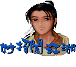
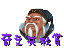

问(Mon, 21 Jul 1997 13:07:25)
灵儿姊姊
vm3 cj/6 ej3
答：(1997年7月22日 下午8:20)
书中仙代答：
w94 fu03 xk7 cj04 2u03 vup vu0 2k7
问(Mon, 21 Jul 1997 13:06:58)
我很想知道仙剑的Windows95板什么时候
北京的老百姓问
答：(1997年7月22日 下午8:20)
1.在大陆地区发行的仙剑Windows95简体专用版，
南苗的小公主答
问(Sun, 20 Jul 1997 14:23:10)
亲爱的大宇:
很高兴你们要出 WIN95 版的 game 了. 但是只否只适用于
我使用的是英文版的 WIN95, 我是用譬如南极星, 加盟等
还有就是我发现到仙剑 SATURN 版的人物肖像都重画过了,
最后一个问题是: NPC 小组最近在忙什么?
祝 设计出更多更棒的 GAME!!!
Arthur Chang 上
答：(1997年7月22日 下午7:55)
1.很抱歉！此版本是Windows95中文版专用，英文版的 WIN95
问(Thu, 3 Jul 1997 21:40:09)
请问灵姐:
答：(1997年7月21日 下午2:58)
1.您现在就可以先寄过来，八月二十日是我们开始处理的时间。
问(Sat, 19 Jul 1997 00:29:45)
灵 儿 姐 你 好 ！
答：(1997年7月21日 下午2:58)
1.Chao、Yoyo。
问(Sat, 19 Jul 1997 10:18:33)
嗨!
答：(1997年7月21日 下午2:53)
唉！无能为力。
坠入烟花历风霜，泪眼对镜黯梳妆；
问(Sat, 19 Jul 1997 13:49:23)
灵姐姐:
听我妹妹说她曾经在不知什么情况下,得到"练隐蛊"的练蛊皿,
仙剑迷
答：(1997年7月21日 下午2:50)
炼蛊皿只有一种，其功能是将五毒虫卵炼成蛊，
问(Sat, 19 Jul 1997 22:27:20)
我想知道魅影神靴在那儿呢?
答：(1997年7月21日 下午2:45)
忘了放了，详情请看五月份狂徒答客问。
问(Sun, 20 Jul 1997 13:48:18)
最可爱的灵儿姊姊
最后,希望价格能便宜一点.
答：(1997年7月21日 下午2:45)
1.装饰品，详情请看五月份狂徒答客问。
问(Sun, 20 Jul 1997 17:27:07)
嗨!
答：(1997年7月21日 下午2:35)
大殿佛像香案的右侧不是有一个宝箱吗？
问(Sun, 20 Jul 1997 19:17:56)
亲爱的灵儿:
袁少侠
答：(1997年7月21日 下午2:15)
1.灵儿没去过香港，不知道耶！
问(Fri, 18 Jul 1997 14:44:50)
大宇公司的全体同仁大家好：
这是第一次写信给你们，格外感到兴奋，因为你们所制作的仙剑奇侠传在我心目
答：(1997年7月18日 下午6:15)
感谢您对仙剑奇侠传的支持！若您已经架设网站
若您还未开始架设，请您将网站的性质、风格、
若有已询问过此问题的玩友，也请再次跟我们联
问(Fri, 18 Jul 1997 15:20:12)
对了能不能将轩辕.仙剑的动画.音乐合成一套萤幕保护
答：(1997年7月18日 下午6:15)
如果各出一套呢？
问(Wed, 16 Jul 1997 15:51:48)
嗨!灵姊姊:
答：(1997年7月18日 下午6:10)
1.凄凉往事不提也罢。
问：(1997年7月15日 PM 11:59)
ㄣ....好久不见...暑假我去日本,哇....真是GAME的天国!!!
ㄚ...虽然只有差1小时,可是我觉得我还像有一点早睡早起了....ZZZZZZZZZZZ
死神本家.
答：(1997年7月17日 下午7:20)
您没探听到有关仙剑的消息，月如姊姊不愿意刊耶！
问(Wed, 16 Jul 1997 19:29:50)
灵儿姐姐..
请问夜行衣在哪丫!井底都快被我
武神
答：(1997年7月17日 下午6:15)
对不起啊！经过我的明察暗访，终于证实，
问(Thu, 17 Jul 1997 11:33:36)
仙剑 WIN 95 版有什么需要用 95 的功能的地方呢?
答：(1997年7月17日 下午7:04)
原来的 DOS 版，在部分玩家的机器
问(Thu, 17 Jul 1997 01:11:30)
在下初出江湖,故满腹疑问想请教请教:
承蒙大师授教,在下李小摇感激不尽!!!!
答：(1997年7月17日 下午6:51)
1.台澎金马地区是指台湾、澎湖、金门、马祖。
问(Mon, 30 Apr 1990 23:58:15)
请问灵儿姑娘:
在水底打水灵兽要往哪个方向出去?
一个偷毒龙胆偷得手软的人留
答：(1997年7月17日 下午6:46)
水魔兽！！真是可怕的经验。水底共有
问(Wed, 16 Jul 1997 22:48:51)
灵儿：
八云
答：(1997年7月17日 下午6:33)
多谢您的建议，灵儿也想这么做说，可
问(Wed, 16 Jul 1997 23:33:26)
您好..
谢谢.....感激不尽...感激不尽~~
答：(1997年7月17日 下午6:18)
逍遥剧场的稿子是狂徒创作群自己的作品，
现在无责任企划的工作已让他赶得满头苞，
问(97/07/17 15:13:23 )
灵儿姊姊你好:
P.S.以上是我小小的意见,仅供参考,若有得罪之处,
(2)请问方不方便大致介绍一下Crazy小组呢?(因为我
~中山妹妹上
答：(1997年7月17日 下午6:09)
1.台湾人，人物肖像是平凡老师、陈淑芬老师
2.因为狂徒创作群现在正处于兵荒马乱的状态
问(97/07/17 09:54:18 )
请问win95版是指在win95下的dos操作，
答：(1997年7月17日 下午6:07)
原本的DOS版就可在win95下的dos操作，
问(Thu, 17 Jul 1997 09:43:43)
请问灵儿姊姊喔:
答：(1997年7月17日 下午6:07)
这个问题我五月份回答过了，
问(Wed, 16 Jul 1997 01:55:18)
你不是说在扬州的井内能走到一个密室，
飞燕 上
答：(1997年7月16日 下午7:07)
莫非又发生忘记放此物品的乌龙事件？
问(Wed, 16 Jul 1997 01:55:18)
灵儿姐姐:
答：(1997年7月16日 下午7:07)
win95版仅出光碟版，并不需要输入密码，但要检查光碟。
问(Wed, 16 Jul 1997 00:03:30)
请问SS版最后的一大堆头，前面数过来第二个长发的帅哥是谁??(败类教主??)
答：(1997年7月16日 下午7:05)
是天鬼皇葛格。
问(Fri, 11 Jul 1997 11:41:59)
关于李逍遥经验值归零的问题
如果在游戏中save, 然后quit, 再load,
答：(1997年7月16日 下午6:56)
这个Bug在游戏发行不久，即已提供更新版本解决，
问( Fri, 11 Jul 1997 19:36:27)
1.WIN95版的仙剑是否能够以滑鼠
答：(1997年7月15日 下午8:36)
内容新增要点如下：
1.增收四首ＣＤ音轨游戏主题配乐
除此之外，剧情玩法与解析度等皆
问( Fri, 11 Jul 1997 08:01:28)
万剑诀十五级才练的成
答：(1997年7月15日 下午7:55)
大侠天赋异禀资质过人，没什么好讶异的。
问(Thu, 10 Jul 1997 15:39:18)
灵儿：我发现桃花林有很多树都能穿过去，
飞雁 上
答：(1997年7月15日 下午7:52)
呃～穿花绕树这句成语您有没有听过？
问( Fri, 11 Jul 1997 00:17:06)
灵儿姐姐:
渴望获得答案的女孩.....
答：(1997年7月15日 下午7:45)
再回答一次：
问(Thu, 10 Jul 1997 17:46:07)
亲爱的灵儿:
以现在的进度来看,仙剑2会在何时上市?
袁少侠.
答：(1997年7月15日 下午7:33)
1.以现在的进度来看，何时出版没人敢打包票。
问(Thu, 10 Jul 1997 17:46:07)
拜托!妙招闯江湖中的(无名氏)是有名字的,我叫“王思凯”,烦请补上.谢谢!
答：(1997年7月15日 下午7:29)
无名氏前辈有两位，您是哪一位？
问(Thu, 10 Jul 1997 16:36:59)
致 灵姑娘:
唐钰 笔
答：(1997年7月15日 下午7:24)
Win95版之资料格式与DOS版并不能相容共用，
问(Tue, 15 Jul 1997 05:58:07)
嗨!李嫂
jojo
答：(1997年7月15日 下午7:18)
1.大家都找不到吗？连我都搞迷糊了，我得再查查。
问(Sun, 13 Jul 1997 01:37:45)
灵儿姐姐
第二个问题...黑狗血那里拿的到.........我玩仙剑好几了.....
真不好意思...........每次都来打扰你................:)请见谅!
答：(1997年7月15日 下午7:14)
别不好意思，欢迎您们尽量问问题！
问(Sun, 13 Jul 1997 01:52:32)
灵儿姐姐
我同学告诉我在大理城可买到各种蛊类......可是我找不到.........
答：(1997年7月15日 下午7:07)
大理城是能买东西的最后地方，每间房子
问(Sun, 13 Jul 1997 14:16:33)
灵儿姐:
本侠自幼自命不凡,自信倾国姿容,冠绝古今,剑眉星目,[电]绝苍生,遍迷世间美女,
光
(以上发言,不代表本人立场)
p.s好友所托
答：(1997年7月15日 下午6:54)
？？？？？？？？？？？？？
问(Sun, 13 Jul 1997 18:14:05)
灵儿 姊姊
答：(1997年7月15日 下午6:42)
小石头化成玉佛珠之后，不是叫我戴上避邪气吗？
问(Mon, 14 Jul 1997 12:42:28)
要如何打拜月教主
答：(1997年7月15日 下午6:40)
David前辈指点：
问(Mon, 14 Jul 1997 23:33:10)
仙剑2可不可以作成李逍遥他爸妈的故事呢？不行的话出个仙剑外传也可以。
大陆睡虫留
答：(1997年7月15日 下午6:35)
1.多谢您的建议，但SS和PC的版本是截然不同的东西，
问(Mon, 14 Jul 1997 23:33:17)
请问聪明可爱活泼的灵儿姐,我不小心改出"火龙"这法术,该如何使用
CoCo.....
答：(1997年7月15日 下午6:28)
很抱歉呐，非正常执行游戏所产生的问题，
问：(1997年7月14日 15:17:56 )
最近有人放风声说有推出仙剑二代,
忠实的仙剑迷上
答：(1997年7月14日 下午7:55)
完全没这回事，您可千万要保重。
问：(1997年7月14日 01:27:45 )
不知saturn版的[仙剑奇侠]人物画工是那国人士设定的 ,
答：(1997年7月14日 下午7:56)
您语意不详，灵儿无法明白您的问题，
问：(1997年7月13日 15:03:36 )
请问有没有考虑过,在"仙剑2"中
答：(1997年7月14日 下午7:56)
有考虑过。
问：(1997年7月12日 07:59:11 )
请问一下ㄛ~ ，还有还有.... "黑狗血"ㄋ!!
答：(1997年7月12日 下午4:10)
投掷黑狗血若成功，能让敌人无法使用法术四回合。
问：(1997年7月12日 07:56:29 )
请问一下ㄛ~ "青龙碧血玉"是干啥用的ㄚ??
答：(1997年7月12日 下午4:10)
垃圾，看看七月九日的回答吧。
问：(1997年7月11日 21:21:55 )
是哪个不负责任的人把留言全删掉啦,
不知该怎么办的小p
答：(1997年7月12日 下午4:10)
请将详细的状况与问题告诉灵儿，
问：(1997年7月11日 20:25:33 )
【仙剑奇侠传】WIN 95 版本销售的确定日期是在何时呀！？...( 八月？？日 )
消息不怎么灵通的八云留
答：(1997年7月12日 下午4:10)
我们现在只敢发布八月上旬发售，不敢
问：(1997年7月9日 下午4:43)
Hi,
Can you help? Thanks.
regards,
答：(1997年7月12日 下午4:00)
您可以使用土灵珠，或是引路蜂，回到桃源乡出口，
问：(1997年7月9日 下午11:04)
把情书交给阿香后
答：(1997年7月11日 下午7:05)
旁边另一位才是阿香的意中人。
问：(1997年7月9日 下午11:04)
Hi Ling-Er,
How much will the Win95 version of 仙剑 cost (in Singapore Dollar)?
Please advise.
Thanks & Regards,
Jen from Singapore
答：(1997年7月11日 下午7:05)
1.定价新台币810元，与DOS光碟版价格相同，我不清楚新加坡会卖多少钱。
2.随光碟盒附赠陈淑芬老师、平凡老师
精心绘制之主角彩色图卡四张。
问：(1997年7月9日 下午10:44)
灵儿姐:
答：(1997年7月11日 下午6:55)
预定八月上旬出片，您对我们这么没信心吗？
问：(1997年7月9日 下午10:37)
灵儿姐姐:
您知道我很守规矩的，系统说不行，
问：(1997年7月9日 下午6:11)
hi!漂漂的灵儿 我又有问题要问你啦!
答：(1997年7月11日 下午6:50)
那是早期设定的过关物品，因剧情改变而取消。
问：(1997年7月9日 下午1:21)
灵儿姐：
Goofy留
答：(1997年7月10日 下午6:19)
1.明星志愿是NPC小组的作品，您可以直接询问他们。
问：(1997年7月9日 上午9:59)
仙剑奇侠传能不能出类似魔法气泡型的游戏?
蚌蚌
答：(1997年7月10日 下午6:19)
我们有想过，但是怕没有人买耶！
问：(1997年7月8日 上午10:58)
再请问灵儿姊姊:
PS:我一个国中同学很像你还有还有~ 班上生物老师很像月如姐
答：(1997年7月10日 下午6:16)
1.参考中国西南少数民族的服装造型。
问：(1997年7月8日 上午10:58)
美丽可爱的赵灵儿
答：(1997年7月10日 下午6:10)
我非常十分明确肯定的告诉您，会！
问：(1997年7月6日 下午7:57)
请问,仙剑奇侠传2的开发进度如何了?
答：(1997年7月7日 下午7:14)
脚本大纲阶段，这是游戏好不好玩的重要关键，大意不得。
问：(1997年7月6日 下午7:57)
紫金葫芦有甚么作用? 谢谢
答：(1997年7月7日 下午7:14)
请参阅妙招闯江湖便知分晓。
问：(1997年7月6日 上午11:39)
八月份win95版的仙剑就出来了...请问是跟以前的PC版内容有差异吗...
答：(1997年7月7日 下午7:10)
★不论是win95版或是SS版，游戏的剧情跟玩法都没有改变。
win95版主要是因应全球趋势，而将原来版本改为可在win95下
问：(1997年7月7日 上午10:59)
请问灵姐:
偶然发现可以用word一类的程序,看
梦过阿奴的那个人
答：(1997年7月7日 下午6:50)
1.别浪费您宝贵的时间了，那是制作过程中留下
问：(1997年7月5日 下午04:23)
那锅呀！我听说在月如姊姊被天花板砸到后，
还有，物品中，盐巴是要用来干嘛的？说明书
姗姗加保美代子（请用台语发音）
答：(1997年7月7日 下午6:35)
1.假的。
问：(1997年7月3日 下午03:26)
灵儿!我很喜欢你,但难道只能在SS.版才能再见到你吗?
日夜相思你
答：(1997年7月5日 下午12:00)
仙剑Win95版将在八月上旬推出，
问：(1997年7月3日 下午03:26)
灵儿姐姐:
答：(1997年7月5日 下午 10:02)
在妙招闯江湖中，水灵珠前辈提供
制作中游戏的相关问题，往后皆由
问：(1997年7月2日 下午11:11)
请问， 我看到好像在游戏的最后，
BTW，又是一只北京来的波斯猫！
答：(1997年7月5日 下午 09:50)
这就要问圣姑了！我也来收集傀儡虫，
问：(1997年7月2日 下午04:05)
请问如何找金凤凰蛋壳?我在树林里走来走去也找不到.
答：(1997年7月5日 下午 09:40)
很难用文字告诉您如何走，只能告诉您大概方位。
讲得非常抽象，希望您能顺利走到，若还是没有办
问：(1997年7月2日 下午04:05)
大嫂, "儿童不宜" 可不是指你喔!
问: 要怎么把30MB的仙剑改成2MB的?
你的弟弟, 陈自在
逍遥自在
答：(1997年7月3日 下午 01:40)
1.乾坤镜与八卦镜的图我们并没有搞混，倒是
问：(1997年7月1日 下午09:44)
有谁知道沉思鬼在什么地方/
答：(1997年7月3日 下午 01:40)
就在同一层的中央部份，太极传送点旁，
问：(1997年6月30日 下午 20:16)
灵儿姐姐:
我有些问题想问你,希望你有时间答覆我啦!
很喜欢灵儿姐姐的小碧 上
答：(1997年7月2日 下午 17:40)
1.是我。
请问仙剑windows95版本的安装方式是否和DOS版的相同?
仙剑 2是否会出磁片版?如果不出,可否增设光碟版的更
新服务,因为如果光碟不幸刮伤,那不就完蛋了
我前阵子有问您问题,为什么又原封不动的寄回来?
(挑战书中仙,我真名的暗号)
1.不同。
2.不会。
3.本来就有。
4.问邮差。
(有胆再放马过来！！)
在大陆上市？价格是多少人民币？
将会较台湾地区的繁体专用版稍晚推出。
2.简体专用版发售日期与售价公司尚未议定。
中文版的 WIN95 呢?
多语言系统来读写中文的. 但是最近发现到如果使用中文版的
软体, 所有 menu bar 上的文字都看不见了. 请问一下像 "仙
剑 95 版" 玩家是否可用多语言系统来玩呢??
WIN95 版是否有任何在画面上的修改?
即使用多语言系统，也无法正常进行本游戏。
2.地图元素、片头片尾动画。
3.您们可以直接至他们的小组网页留言询问，不过依灵儿的了
解，他们的美工群之一，受到无责任企划谢崇辉的无情压迫，
目前正在充当廉价劳工。
我有一些问题想问你:
1.哪时可将Dos版的仙剑寄去换成WIN95版的仙剑.
2.我走到黑水镇,开完所有的门后就不知怎么办了!
不知怎么办的人.
2.继续往左上走，以后的路还长着呢！
1： 你 和 逍 遥 哥 在 SS 版 的 英 文 名 字 会 是 什 么 ？
呜~~~ 我 家 没 有 Sega Saturn 呀 ！
2： 在 光 牒 版 里 诗 词 集 中 第 二 页 的 人 是 谁 ？ 小 的 那 个 又 是
谁？
3： 李 大 娘 为 什 么 那 么 强 ？ 她 真 正 身 分 是 谁 ？
2.灵儿与母亲共享天伦的假想图。
3.铁掌飞凤孙岚能不强吗？皇后身边的御前侍卫。
请问一下!怡红院的莺莺夫人有没有办法帮她赎身???????????
一双玉臂千人枕，半点朱唇万客尝。
自己也不知怎么搞的,请灵姐姐明察是否属实?谢谢.
不可能可炼成其他东西。
胖爸爸留!!
请问在隐龙窟中的洞府中的大厅边缘,一大堆宝箱,是可以拿的还是当装饰品的?
另外,仙剑 2的战斗画面是否能和ss版的一样?或着更好?游戏系统最好有些趣味
性,像轩辕剑 2的系统就不错.
祝:万事如意
2.您认为狂徒创作群会那么不长进，只在
原地踏步吗？
请问"妙招闯江湖"中有人说水月宫最左上角的宝箱有"苗刀"
可是我找不到还试玩了好几次?????????????????????????
拿过里面的东西后，再调查一次，就能得
到苗刀。
本少侠现有2个问题想问问你!
1. 请告知在香港的什么地方才可买到你们的原版game?
2. 可否出一些"简易包装版"?如"软xx界"在香港出的$60一个game.
2.好像不可能。
中，一直是最佳的国产游戏，常在你们所设的网页中获得最新的消息，而近日来我们
学校的专线已经进入申请阶段，在我所建构的网页之中也有关于我最喜欢的仙剑奇侠
传的收集，音乐，图案，文章等，皆是由网路上各网站之中所收集而来的，当然，我
的网站目前还未对外开放，想和你们全体工作小组的同仁事先告知一下，如果不妥，
我会马上将此网页删除，以免侵犯到你们的智慧财产权及版权所有，想取得贵公同的
同意，不知你们觉得如何？希望能在短时间内给我一点回应，谢谢！
，请将您的网址告诉我们，我们会看您的网站的
性质，是否符合我们的基本要求，（如不可有色
情、侵犯著作权等内容）再决定是否授权。
大概内容以及个人资料告诉我们，我们再决定授
权与否。目前仅【媐舲舫】得到本公司的授权，
您可以进入【玩友架设的仙剑网站】与他们连系
，询问过程，希望早日看到您的网页喔。
系，一并处理授权问题。
每一套我都有玩喔!
1最后你到底是......(死.活?????????希望你活着)林姊姊呢?????????
2夜行衣还是找不到耶??????????到底在那里???????????
3仙剑2大约啥时出????????????
4逍遥哥最后到底跟谁??????????
2.对不起啊！经过我的明察暗访，终于证实，
夜行衣跟魅影神靴一样忘了摆，我还告诉大
家在井里找得到，真是抱歉！视窗九五版一
定会摆上去，以彼之道还施彼身就能得到。
3.那是明年的事了，也说不准是何时。
4.回杭州陪婶婶跟女儿。
坐山手线就可以到的"秋叶原"真是.....所有的GAME都可以买得到..
因为怕PC98和IBM PC不合,我就只有逛TV Game了..有一件事我一直强调..那就
是"周边产品",不要以为这是商人骗小孩的把戏!像仙剑这种作品如果有周边产品的
话,寿命就更长了!!!虽然这样有点老的离谱,但我始终认为有必要!像我现在
的鼠垫就是NACORURU和她老妹,没事瞄一下实在是赏心悦目..侍魂杂七杂八的书
我也不知道买了几本.另外像对战方块我早就有构想了!也有人有相同看法,像樱花
大战那种游戏还不是美眉帅为卖点,出方块看美眉CG很划得来的,绝对有人买!!
仙剑Windows95出限定版是一定要的!!!!!!2000以内都很合理,像SAKURA大战还限定复刻耶!!!
说了一大堆....希望你们不要觉得烦.软件展我有去看ㄡ!!!本来想拍照的(我还带DC50耶!!)
可是看一看都没人理我(本来以为会有人围过来说:你就是媐舲舫的舫主!!??!!你就
是死神老大??!!!可是.......$#@$.我连签字笔都带了耶........)
我一直在找长毛的谢先生,看到一个小马尾的不知道是不是,
也没有看到甚么可以当电脑仙的鬼神....只好做罢...
我放在狂徒答客问可好？长毛的谢先生不绑马尾很久
了，他跟电脑之神都没去会场。
翻过来了.还是找不到呢
夜行衣跟魅影神靴一样忘了摆，我还告诉大
家在井里找得到，真是抱歉！视窗九五版一
定会摆上去，以彼之道还施彼身就能得到。
如果没有,那会不会另外出 DOS 更新版呢?
之 WIN 95 的 DOS 模式下，会有不
正常，甚至不能玩的现象，故研发
仙剑 WIN 95 版，以在 WIN 95 操作
系统下直接进行，原本的 DOS 版售
完存货后，即不再生产。
1,"仙剑公布栏"中之WIN95版仙剑奇侠传所指的"台澎金马地区"是否包括马来西亚?
2,请问大宇公司是否在马来西亚设有分销商.在下对贵公司之游戏"倾慕"
已久仍无法买到原装的大宇游戏(二手的倒有).如有,可否将之地址电话告知予在下
3,可否告知在下如何将原有的原装"仙剑"升级成WIN95版(在下在马来西亚!)
2.本公司在马来西亚并无分销商。
3.很抱歉！兑换办法仅适用于台澎金马，其他地区无法受理。
我偷的毒龙胆已经超过20个了还没走出去
可否告知 谢谢
两张地图，第一张出口在地图的最右下
角，第二张要往最左下角走，到有圆形
光亮的地方，接着灵儿的母亲便会．．
．．．，呜呜呜～～～。
您回答玩友们的问题将近有三个月了，
而其中相同的问题也反覆出现了几次。
是否有考虑讲重覆的问题，或着是已经
有问过的问题整理一下，公布在【仙剑
公布栏】？
是平常回信就蛮吃力了，没时间整理耶
。像前天才回几封信，就从六点忙到九
点多，逍遥哥也没送饭来，害人家肚子
饿得咕咕叫呢！
小弟是仙剑迷...
因缘际会，惊见贵站有此大作--逍遥剧场，故希望能将其转贴在
BBS站 (非连线板)中，以飨更多的仙剑迷......希望您能成全...
转贴时小弟会注明出处及作者所以请放心，不知您意下如何？
还有一事请问.....就是第六话何时会现世呢？
小弟衷心期待着....
纯粹转贴让其他玩友欣赏并无妨，若是玩友
们所留的文字、诗词就不行了。
最快也要十月份才有＂可能＂动笔，而且他
已经学乖了，若没把所有的稿子写完，是不
敢继续刊登连载的。
(1)很抱歉地问:仙剑SSwin95版中,人物对话时的大头
画像是哪国人士画的?(一路看下来,感觉上不少玩友
们似乎并不是很满意)其实原来DOS版画得还不错,很
受大家肯定!(为何要改呢?)
还请多包涵)
很[喜欢+崇拜}狂徒)____非常谢谢你!.最后祝福大家
一切顺利!!
重新设定纸上稿，再由狂徒创作群绘成电脑图
，可能没有表现出两位老师的画风神韵，我们
会努力改进的，也可能是玩友们看原来的图习
惯了。像我个人倒是蛮喜欢新的图，逍遥哥也
变帅了。
下，仙剑WIN95、SS版、以及二代的企划工作
，都同时在进行，等过了这段阵痛期，他们便
会把小组介绍网页架设好，敬请见谅。
还是改为windows系统。
win95当然是在windows系统操作。
如何使用水灵珠,解决大理城的旱灾啊????
拿到母亲的遗物后，到神殿后
方的祭坛祈雨，先将圣灵珠放
在石碑中央的圆孔，再照碑文
提示，将五颗灵珠依东～雷，
西～风，南～土，北～火，中
～水放置即可。
里面有夜行衣吗？怎么没有看到？
(我在那里晃了一个小时多了！)
请给我一些时间让我查清楚，很抱歉浪
费您宝贵的时间。
在win95版中,游戏安装部份是否还是跟dos版一样呢?
如果没有光碟只要有密码图就可执行游戏?我希望95版
不要再像dos版一样若无光碟只需密码图就可玩game,这样
一来容易被拿去做成大补贴................仙剑这样好的游戏被
拿去做成补贴太不值得了..............................
道高一尺魔高一丈，不管如何的保护，都防不了有心人的
拷贝，只能呼吁大家支持原版！
李逍遥的经验值会变成零. 请问这是否bug?
新的Win95版会不会有修正？
Win95版当然不会有这个问题，若您还未更新，请至
大宇资讯档案服务区Download，因为我们的疏失，造
成您的困扰，甚感抱歉！！
完全替代键盘的操作(包括走路
方向的操纵)?
2.有否新增任何新的功能?
如自动绘图功能等?
3.现在此新版的进度如何?
2.新增道具、法术之辅助说明功能
3.专业录音室重新配音录制之音效
4.随同光碟附赠主角彩色图卡四张
5.重新制作之开头、结局剧情动画
未作改变，目前进度正在做收尾阶
段，约在七月二十五日开始会进行
测试工作。
可是我十四级就练成了
为何?
（李逍遥：想让人赞就说一声！）
为什么？
在"妙招闯江湖"中有人提到酒神可用无限次,只要还有酒
,就算系统说不能再用酒神,要k几万次都可以,我告诉我同学
她回去试了之后说不行.....道底是怎么回事.......
您知道我很守规矩的，系统说不行，
我就乖乖的没去试了，可能他们是自
己修改的吧？
还有,可否供应原装的仙剑2到香港去?
说快了没人相信，定得太晚又徒招人骂，不说也罢。
2.本公司的产品出货当天，便会第一时间运至香港。
莫非仙剑一代您没买到原版？
不知仙剑Win95版可否提供部分更新套件,在网站上让玩家下载?
希望能考虑一下,并希望仙剑SS版能继PC版之后再创销售佳绩。
故无法提供玩家下载更新，不过我们拟定了一个
以旧版兑换的办法，近期就会公布。
1 请问夜行衣在井里的那里?
2 黑狗血在那里?
2.黑狗血功能同咒封，已被取消，所以拿不到，
您从哪知道有这个东西的？
在树洞那里,有一个树洞上去之后有个石碑写这"灵山"
请问"灵山"在仙剑里是份演这什么角色...还是那是写好
看的......
都没找到过..................??????????
1.蜀山锁妖塔、灵山神木林，懂了吧！
2.该物品功能同咒封，已被取消，所以拿不到。
都进去看看吧！还能买到金蚕王呢！除了
苗人的商店外，也可去汉人的商店。
此回初履江湖,但望一剑试天下,仗剑为红颜,苦于怀才不遇知己,抱负难求宣泄,还
望灵儿姐恩赐[仙剑二男主角玉照画源]一职,以偿本侠今生未了之遗愿,多谢,告辞 ! ^__^
我每次玩到黑水镇里的迷宫尽头，也就是说墓园里有阶梯往下亮光处所时
，就会被一阵强劲的阴气挡住耶。甚为苦恼不知您能否帮忙，不吝指导一
番，在此先感激一下。
您一定没帮我配戴。
打拜月教主时，先隐身，再让灵儿变成梦蛇，再
让阿奴使用乾坤一掷【一直使用】，后面两回合
分别使用醉仙望月步和天罡战气，并让灵儿不停
攻击【记得三回合后继续隐身，并注意法术还有
多少回合就失效，若已失效继续使用】，而逍遥
哥则可连续使用酒神，这样拜月教主很快就会死
了。
另外，仙剑的win95版本是用640×480×256吗？还有SS和PC的文件格式相同
，也就是说一张盘即可放PC又可放SS文件，所以可不可以出个PC＋SS的特别版呢？
最后请问win95仙剑可以在简体win95下用吗？在大陆有没有代理（没有的话我来做）
不可能放在一起。
2.win95版游戏新增道具、法术辅助说明功能，额外收录
四首全新谱写之游戏主题配乐，全新录制之音效，重新
制作的开头、结局动画，并随游戏附赠陈淑芬老师、平
凡老师所精心绘制的主角彩色图卡四张，解析度并没有
改变。
3.在大陆地区我们会发行简体字版。
灵儿没试过，无法为您解答耶！
有没有这事呢?
还有我等的快发疯了.
怎么有些粗糙#%*@&....?
您是指人物设定不佳，还是画成电脑图
后显得粗糙？
增加以客栈住宿来补满HP and MP的功能呢?
Snail到此一游~
我留了一个无法存档的问题希望有人
能帮我解答一下,结果才几天没来看看,
就成了这样,请问谁要给我一个回答呢.
灵儿才能直接为您解答。
麻烦阿奴企帮忙探一下听好吗？...^_^
说是几号，以免稍有差池，动辄得咎，
若已确定，便会马上公告，希望您多多
包涵！
I've bought a copy of your game "Xian Jian Qi Xia Zhuang".
Everything has been going on smoothly until I arrived at "Tao Hua
Yuan". After I defeated "Mu Dao Ren", I cannot find the way to "Ah
Nu"'s house.
Boon Choy
就能回到圣姑的住处。若您是想到大理城，请从桃树
林右边的树洞，就能找到往大理的路了。
拿到了玉佩
在卫兵(把情书托给李逍遥请他转交给阿香那一位)面前使用玉佩
他说不是他的
接下来呢?
将玉佩交给他吧！
Will there be any new poster given out, like the old one?
仙剑win95版真的会在八月发行吗...............
不会延吧....................!!!!
在"妙招闯江湖"中有人提到酒神可用无限次,只要还有酒
,就算系统说不能再用酒神,要k几万次都可以,我告诉我同学
她回去试了之后说不行.....道底是怎么回事.......
答：(1997年7月11日 下午6:55)
我就乖乖的没去试了，可能他们是自
己修改的吧？
某天 我不小心改到"青龙碧血玉"这个东东
这个东西放在金凤凰蛋壳 火眼麒麟角隔壁
我尝试把它放到仙术栏 物品栏都不能使用
那到底是啥??
您别再翻我家的垃圾了，那一点意义都没有啊！
很冒味的请教你，明星志愿是否会开发第二代
还有，在仙剑第二代中，你与逍遥哥和月如姊
是否会出现
2.高层命令指示，不得透露仙剑Ⅱ的内容，敬请见谅。
阿奴的造型是从何处得到灵感?
我有一个同学很像她(女的).
2.能否寄来她们的照片呢？
仙剑win95版会不会放上dos版没放的「魅影神靴」呢?
就摆在试炼之窟最底层，加油！
另外最重要的战斗画面是否做成跟SS版差不多..还是不变呢...请告知
THANKS
直接执行的版本。游戏的剧情跟玩法都没有因而不同。不过内
容新增了道具、法术辅助说明功能，全新录制音效，逍遥哥做
梦的剧情动画、以及重新制作结局动画。您所说的最重要的战
斗画面并没有改变。
剧情对话,也发现在抓女飞贼后可得为数
可观的赏金,可是我玩了五遍(正在玩第六
遍)都拿不到,何解? 另外,我好喜欢阿
奴,不晓得在二代里,她的戏份及定位为何?
也祝你在二代里能一家团圆.
的注解，已将该结果删除，故正式版本并不能拿
到赏金。
2.谢谢您，不过二代的内容还不能向您透露喔！
老婆婆要逍遥哥哥去搜集很多只傀儡虫时，如
果身上已经有足够的马上给老婆婆，再到桃花
村去会遇见一个人，她会帮助后来打拜月教主
...这是真的吗？
上也没有写耶！对了，还有鸡蛋呢？是干嘛的
呀？
2.盐巴：取海水煎熬或曝晒而成，用来调味，有时可解毒。
3.鸡蛋：便宜而常见的食物。HPMP+10
好希望能在电脑上再次相会,没有PC.版吗?虽然如此,但我
永远支持你!
此生爱你不变之人.
详情近日内会在仙剑公布栏公布。
你难道只能召唤武神???
P.S:仙剑2的内容能否透露?嘻嘻嘻........
蚌蚌
了一个让我可以召唤火神的方法，
您不妨一试。
月如姊姊在适当时机，于仙剑公布
栏代表发言，灵儿就不在这里多嘴
了。
林月如是可以活着的， 您是否知道
是如何做得呢？
说不定．．．．．．。
我已经看到猴子(死了),也被两只鸟带了上树.看到了蛋,可是去不到.
这张地图的起点大约是最下方的中央，走不久就会
看到猴子，在通过猴子后一直向右上方向走，直到
看到有岔路，问题就出在这边，您必须改朝右下方
向走进树洞，别向上爬，然后大概就能依照顺时针
方向，由地图右上角、右下角、左下角一直走到地
图最左上角，凤凰巢的所在了。
法，请留下您的联络资料，我们再以传真或邮寄方
式，把该关地图给您。
你们在装备的网页把乾坤镜与八卦镜搞混啦!
能不能制造一个妖怪与法术介绍?
对了, 有一位朋友问了一个问题, 关于逍遥大哥经验值归零的问题, 我可以帮助他
, 不要去download啥东西, 直接load到巫王宫殿, 用酒神杀几只妖怪, 赚一点经验
值在再load回去最前面的进度, 杀一只妖怪就可升很多级.
说明书中将乾坤镜的图放成八卦镜了。
2.妖怪与法术介绍有空再说。
3.重新安装。
一走去找书中仙就瞧不到了
您必须由下方的入口进入。
1.'仙剑'的封面,男的很显然是逍遥哥哥的了.那么,女的呢?是你还是月如姐姐呀?
2.在故事的最后,你平日带着的浅蓝色丝带,在空中随随降下.是不是代表你已经和
水魔兽同归于尽了?
3.逍遥哥哥对谁的爱最刻骨铭心呢?
我希望能在"仙剑2"里看见你哦!
2.呜～我的精神还是会与您们同在。
3.那就得问他了，不过恐怕连他也不知道吧。
|  [妙招闯江湖] |
 [玩友留言版] |
[仙剑公布栏] |
 [奇文共欣赏] |
[玩友架设的仙剑网站]| [E-mail]| [大宇资讯主画面]
不得全部或局部翻印、重制或转载与修改后用于他途。 Copyright 1997 SOFTSTAR INFORMATION CO., LTD.